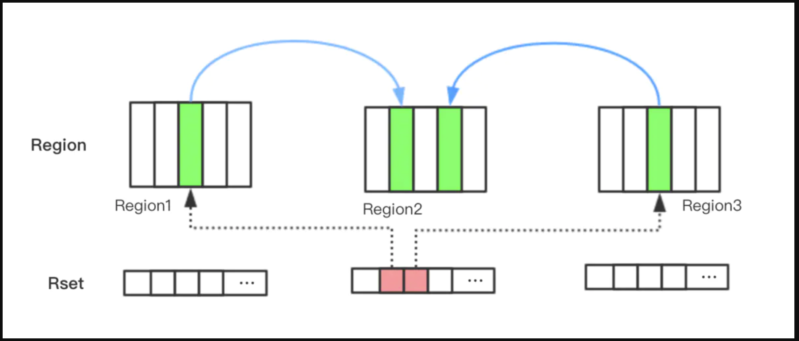

卡表和 RSet
卡表和 RSet
问题定义：为什么需要跨区域引用记录
JVM 垃圾收集器的核心工作之一是确定 live set——哪些对象仍然存活、不可回收。确定 live set 的标准做法是从 GC Roots（栈帧中的局部变量、静态字段等）出发，沿引用链遍历所有可达对象。
问题在于：当堆被划分为多个区域（代、Region）并且只回收其中一部分时，如何高效地找到从"不回收区域"指向"回收区域"的引用？
以 Young GC 为例：只回收新生代，但老年代中可能持有指向新生代对象的引用。如果不处理这些跨代引用，就会错误地回收仍被老年代引用的新生代对象。最朴素的做法是扫描整个老年代来找出这些引用——但老年代通常远大于新生代，这样做的代价过高，违背了分代收集"只回收一部分堆"的初衷。
卡表（Card Table）和 RSet（Remembered Set）正是为解决这个问题而设计的辅助数据结构。二者的关系并非互相替代，而是层次不同、协作互补：卡表是底层的脏标记机制，RSet 是建立在卡表之上的更高层索引结构。
核心概念速览
在深入细节之前，先建立全局认知：
| 维度 | 卡表（Card Table） | RSet（Remembered Set） |
|---|---|---|
| 本质 | 一个覆盖整个堆的 byte 数组，每个元素对应一块固定大小的内存区域（card） | 每个 Region 持有的哈希表，记录"谁引用了我" |
| 记录方向 | points-out：标记"这块区域里有对外引用" | points-into：记录"哪些外部 card 引用了本 Region" |
| 粒度 | card 级别（HotSpot 中每个 card 覆盖 512 字节） | card 级别（RSet 的 Value 是 card index 的集合） |
| 数量 | 全局一个（覆盖整个堆） | 每个 Region 一个 |
| 使用的收集器 | Serial、Parallel、CMS、G1、Shenandoah 均使用 | G1 特有（ZGC/Shenandoah 采用了不同的方案） |
| 维护机制 | 写屏障（write barrier） | 写屏障 + Concurrent Refinement Threads |
🔑 模式提炼：脏标记 + 写屏障
卡表和 RSet 背后的通用模式是**“脏标记 + 写屏障”**——在数据变更时通过拦截写操作（写屏障）维护一个辅助标记结构（脏标记），使后续查询可以跳过未变更的区域。
这个模式的参数化公式：ON_WRITE(target) → MARK_DIRTY(auxiliary_structure, locate(target))
| 场景 | 辅助结构 | 写拦截点 | 查询收益 |
|---|---|---|---|
| 卡表 | byte 数组 | 引用赋值 | Young GC 跳过 clean card |
| 操作系统脏页 | 页表 dirty bit | 页写入 | 换页时跳过 clean page |
| 数据库 WAL | redo log | 行修改 | 恢复时只重放脏页 |
| CPU cache | cache line dirty bit | cache 写入 | write-back 时跳过 clean line |
核心洞察：当听到"只处理变更过的部分"这类需求时，应该想到脏标记模式。其本质是用写操作时的少量额外开销，换取读/扫描操作时的大幅度缩减。
卡表（Card Table）

数据结构
卡表在 HotSpot 中实现为一个 byte 数组，覆盖整个 Java 堆。堆被逻辑划分为固定大小的 card，每个 card 覆盖 512 字节的连续内存区域，对应卡表数组中的一个字节。
地址到卡表索引的映射关系：card_index = (address - heap_base) >> 9（右移 9 位即除以 512）。
当某个 card 对应的字节被标记为非零值（dirty）时，表示该 card 覆盖的内存区域中可能持有指向其他区域的引用。注意"可能"二字——卡表是一种保守的近似，存在 false positive（标记为 dirty 但实际上没有跨区域引用），但不存在 false negative（有跨区域引用但未标记）。
写屏障维护
每当程序执行引用赋值操作（如 obj.field = anotherObj），JVM 通过写屏障（write barrier）将 obj 所在的 card 标记为 dirty。写屏障的伪代码：
1 | |
这段逻辑被注入到以下所有位置：
- 解释器执行的字节码
- JIT 编译器（C1/C2）生成的机器码
- JNI 原生代码的引用更新路径
写屏障的开销是每次引用赋值额外执行一条 store 指令——代价极低，但保证了卡表始终处于最新状态。
在 Young GC 中的作用
Young GC 只回收新生代，但需要找到所有从老年代指向新生代的引用。有了卡表，收集器的工作流程变为：
- 从 GC Roots 出发，遍历新生代中的可达对象。
- 扫描卡表，找到所有 dirty card，只检查这些 card 覆盖的老年代区域，从中找出指向新生代的引用，将其也作为根。
- 跳过所有 clean card 对应的老年代区域。
这样就避免了扫描整个老年代。在典型的应用中，老年代中只有少量 card 是 dirty 的（因为老年代对象的引用关系相对稳定），所以扫描量大幅减少。
JVM 参数
1 | |
在多线程并行收集时，每个 GC 线程批量扫描多个 card，一批 card 称为一个 stride。默认一个 stride 含 256 个 card（即 512 × 256 = 128 KB）。ParGCCardsPerStrideChunk 控制每个 stride 的 card 数量。stride 太大会导致单次扫描时间过长，stride 太小会导致线程在 stride 之间切换的同步开销增加。
卡表的局限
卡表解决了"从老年代找到指向新生代的引用"这一问题，但它有两个固有局限：
- 方向单一：卡表是 points-out 的——它标记"这个 card 里有对外引用"，但不记录"引用指向谁"。收集器仍需扫描 dirty card 内的所有对象来找到具体的跨代引用。
- 只适用于连续分代：在传统的连续分代布局（新生代 + 老年代各占一块连续空间）中，卡表工作良好。但当堆被划分为大量不连续的 Region 时，仅靠卡表无法高效地回答"哪些 Region 引用了这个 Region"。
这两个局限正是 G1 引入 RSet 的动机。
RSet（Remembered Set）

G1 的堆布局变革
G1 将整个堆划分为大量等大的 Region（默认 1-32 MB），每个 Region 可以动态充当 Eden、Survivor、Old 或 Humongous 角色。这种布局带来了灵活性——G1 可以选择回收价值最高的 Region 子集（Collection Set, CSet），而非必须回收整个新生代或老年代。
但灵活性也带来了新问题：跨 Region 引用无处不在。不仅有 old→young 的跨代引用，还有 old→old、young→old 等各种方向的跨 Region 引用。仅靠全局卡表的 points-out 标记，无法高效地回答"哪些外部 Region 引用了 CSet 中的某个 Region"。
数据结构
RSet 是每个 Region 持有的一个哈希表（概念上），记录"谁引用了我"：
- Key：引用来源 Region 的起始地址
- Value：该来源 Region 中引用了本 Region 的 card index 集合
因此，G1 的 RSet 建立在 Card Table 之上——RSet 并不替代卡表，而是在卡表的基础上增加了一层反向索引。卡表提供 card 级别的脏标记，RSet 利用 card index 记录引用的来源位置。
points-out 与 points-into 的区别
这是理解卡表与 RSet 关系的关键：
- points-out（卡表）：站在引用发出方的视角——“我这个 card 里有对象引用了外部区域”。回答的问题是"哪些 card 需要被扫描"。
- points-into（RSet）：站在引用接收方的视角——“外部的哪些 card 引用了我这个 Region”。回答的问题是"谁引用了我"。
points-into 的优势在于：当回收某个 Region 时，直接查看该 Region 的 RSet 就能知道所有外部引用的来源，无需扫描整个堆的卡表。
RSet 在不同 GC 阶段的作用
Young GC：只回收 young Region。每个 young Region 的 RSet 记录了所有 old→young 的引用来源。收集器将这些 RSet 中记录的 card 作为额外的根，与 GC Roots 一起作为遍历起点。这样就避免了扫描整个 old generation。
Mixed GC：同时回收 young Region 和部分 old Region。对于被选入 CSet 的 old Region，其 RSet 记录了 old→old 的引用来源。young→old 的引用则通过扫描所有 young Region 获得（young Region 数量有限，扫描代价可接受）。
RSet 的维护
RSet 的维护比卡表复杂，分为两个阶段：
-
写屏障（post-write barrier）：每次引用赋值时，写屏障将变更信息记录到一个线程本地的 dirty card queue（DCQ）中，而非直接更新 RSet。这样做是为了避免在 mutator 线程的热路径上执行复杂的哈希表操作。
-
Concurrent Refinement Threads：后台的 refinement 线程异步消费 DCQ 中的条目，将其转化为 RSet 中的记录。这些线程与应用线程并发运行，将 RSet 维护的开销从 mutator 的关键路径上移除。
RSet 的内存开销与优化
RSet 的空间开销不可忽视——在极端情况下，RSet 可能占用堆内存的 10%-20%。G1 通过三级粒度优化来控制 RSet 的大小：
- Sparse：当引用来源较少时，使用哈希表直接记录 card index
- Fine：当引用来源增多时，使用位图（bitmap）记录 card index，每个来源 Region 一个位图
- Coarse：当引用来源过多时，退化为一个 Region 级别的位图，只记录"哪些 Region 引用了我"，丢失 card 级别的精度
这种三级结构是一种渐进退化的设计——在精度和空间之间动态权衡。
🔑 模式提炼：反向索引加速定向查询
RSet 的 points-into 设计本质上是一种反向索引——正向关系是"A 引用 B"，反向索引记录的是"B 被 A 引用"。
参数化公式：REVERSE_INDEX[target] = { source₁, source₂, ... }
| 场景 | 正向关系 | 反向索引 | 查询收益 |
|---|---|---|---|
| G1 RSet | 对象 A 引用对象 B | Region B 的 RSet 记录 A 所在的 card | 回收 B 时直接知道谁引用了 B |
| 数据库外键索引 | 订单表引用用户表 | 用户表上的外键索引 | 删除用户时快速找到关联订单 |
| 搜索引擎倒排索引 | 文档包含关键词 | 关键词→文档列表 | 搜索关键词时直接定位文档 |
核心洞察：当需要频繁回答"谁引用/依赖了 X"这类反向查询时，应该考虑建立反向索引。代价是写入时需要同时维护正向和反向两个方向的数据结构。
卡表与 RSet 的关系：不是替代，而是分层协作
理解二者关系的关键在于认识到它们处于不同的抽象层次：
1 | |
- 卡表是基础设施：无论使用哪种收集器，卡表都存在。它提供了将堆内存划分为 card 并标记脏状态的基本能力。
- RSet 是上层索引：RSet 建立在卡表之上，利用 card index 作为记录粒度，提供了 points-into 的反向查询能力。
- 在 G1 中二者共存：卡表负责脏标记和 card 级别的定位，RSet 负责反向索引和快速查询。
在非 G1 的收集器（Serial、Parallel、CMS）中，只有卡表，没有 RSet。这些收集器的堆布局是连续的两代，只需要处理 old→young 一个方向的跨代引用，卡表足以胜任。
历代演进：跨区域引用问题的解决思路
第一阶段：Serial / Parallel 收集器——全局卡表
最早的分代收集器面对的问题是：Young GC 时如何避免扫描整个老年代。
解决方案是全局卡表 + 写屏障。老年代中每个 512 字节的 card 对应卡表中的一个字节，引用赋值时通过写屏障标记 dirty。Young GC 时只扫描 dirty card。
这个方案简单高效，适用于连续分代布局。
第二阶段：CMS 收集器——卡表 + 并发标记
CMS 引入了并发标记，但跨代引用的处理仍然依赖卡表。CMS 的特殊之处在于：并发标记阶段 mutator 仍在运行，可能修改引用关系，因此需要通过写屏障将变更记录到 mod-union table（本质上是卡表的变体）中，在 remark 阶段重新处理这些变更。
第三阶段：G1 收集器——卡表 + RSet
G1 将堆划分为 Region，跨区域引用从单一方向（old→young）扩展为多方向（old→young、old→old）。仅靠卡表的 points-out 标记无法高效支持"回收任意 Region 子集"的需求。
G1 的解决方案是在卡表之上增加 RSet 反向索引。每个 Region 的 RSet 记录了所有指向该 Region 的外部 card，使得回收任意 Region 时都能快速找到外部引用。代价是 RSet 的内存开销和 Concurrent Refinement Threads 的 CPU 开销。
第四阶段：ZGC / Shenandoah——不同的路径
ZGC 和 Shenandoah 选择了与 G1 不同的路径。ZGC 不使用传统的 RSet，而是通过染色指针（colored pointer）和读屏障（load barrier）来处理跨区域引用问题。Shenandoah 早期版本使用了类似 G1 的 RSet，但后续版本也在探索更轻量的方案。
这反映了 GC 设计中的一个根本权衡：是在写操作时付出代价（写屏障维护卡表/RSet），还是在读操作时付出代价（读屏障处理引用）。
| 收集器 | 跨区域引用方案 | 屏障类型 | 核心权衡 |
|---|---|---|---|
| Serial / Parallel | 全局卡表 | 写屏障 | 简单，适用于连续分代 |
| CMS | 卡表 + mod-union table | 写屏障 | 支持并发标记 |
| G1 | 卡表 + RSet | 写屏障 + post-write barrier | 支持任意 Region 子集回收，内存开销较大 |
| ZGC | 染色指针 | 读屏障（load barrier） | 无 RSet 内存开销，读路径有额外代价 |
结论
卡表和 RSet 的关系可以用一句话概括：卡表是"哪里脏了"的标记，RSet 是"谁弄脏了我"的索引；卡表是地基，RSet 是建筑。
- 卡表解决的是"Young GC 时如何避免扫描整个老年代"的问题，通过 points-out 的脏标记 + 写屏障实现。
- RSet 解决的是"回收任意 Region 子集时如何快速找到所有外部引用"的问题，通过 points-into 的反向索引实现，底层依赖卡表的 card 粒度。
- 二者不是互相替代的关系，而是分层协作：在 G1 中，卡表和 RSet 共同工作；在非 G1 收集器中，只有卡表。
从演进角度看，跨区域引用问题的解决思路经历了从"全局脏标记"到"分区反向索引"再到"染色指针"的演进，反映了 GC 设计在写开销与读开销之间的持续权衡。
模式速查表
| 需求关键词 | 对应模式 | 方案 | 口诀 |
|---|---|---|---|
| 只处理变更部分 | 脏标记 + 写屏障 | 写时标脏，读时跳过 clean | 写时多做一点，读时少扫一片 |
| 谁引用/依赖了 X | 反向索引 | 维护 target→sources 映射 | 正向写入，反向查询 |
| 精度与空间权衡 | 渐进退化 | 多级粒度，按需降级 | 少时精确，多时粗放 |
参考资料